Chapter 9Decoding and Deployment
Abstract After training is complete, large language models (LLMs) can be deployed in real-world applications. In the autoregressive architecture, the model generates output content token by token based on the input, often referred to as the prompt text—a process known as decoding. This chapter begins by introducing common decoding strategies in the autoregressive framework, focusing on two fundamental approaches: greedy search and random sampling. We then explore enhanced versions of these strategies, including beam search, length penalty, and repetition penalty for greedy search, as well as temperature sampling, top-k sampling, and top-p sampling for random sampling.
Next, we address the challenge of low decoding efficiency in autoregressive generation by providing a quantitative analysis of model inference efficiency. Specifically, we break down the process into individual phases—prefill and decoding—and present methods for calculating memory costs for each phase. To further improve efficiency, we introduce optimization techniques at both the system and algorithm levels. For system-level optimization, we briefly discuss three prominent methods: FlashAttention, PagedAttention, and batch management. For algorithm-level optimization, we cover speculative decoding, cascade decoding, non-autoregressive decoding, and early exit mechanisms.
Finally, we introduce model quantization, a widely used compression technique for deploying LLMs in resource-constrained environments. We also briefly touch on other compression methods, including model distillation and pruning. This chapter aims to provide a comprehensive overview of decoding strategies, efficiency optimization, and deployment techniques, equipping practitioners with the techniques needed to effectively utilize LLMs in real-world scenarios.
Once training is complete, large language models (LLMs) can be deployed in real-world scenarios for application. In the autoregressive architecture, the model generates output content token by token based on the input (i.e., prompt text), a process often referred
to as decoding. This chapter will first introduce common decoding strategies (Sect. 9.1) and the corresponding optimization algorithms (Sect. 9.2). We will then discuss two important deployment-related topics: model quantization (Sect. 9.3) and other general compression methods (Sect. 9.4) for adapting LLMs to low-resource scenarios.
9.1Decoding Strategies#
Text generation of language models is essentially a probabilistic sampling process, requiring the design of an appropriate decoding strategy to generate output content. This section will introduce common decoding strategies for LLMs.
9.1.1Background#
Before introducing specific decoding strategies, let us first cover some background knowledge on language model decoding. We will primarily discuss decoding strategies in the context of autoregressive generation. Algorithm 2 shows the decoding process in the autoregressive manner. The model M. computes the probability distribution P for the next token based on the current sequence of tokens u = [u1, u2, · · · , ut]. (i.e., the output of Eq. 5.11), and then selects the next token ˆu. according to a specific decoding strategy. This process repeats, with u. and ˆu. serving as the new context, until an end token is generated or a length limit is reached. In this process, decoding strategies primarily focus on how to choose the next token ˆu. based on the probability distribution P. Autoregressive decoding strategies are versatile and can be applied to various architectures, including encoder-decoder, causal decoder, and prefix decoder models.
Algorithm 2 Autoregressive decoding process
Require: Model M., input token sequence u.
Ensure: Output token sequence y.
1: repeat
P = M(u). # Generate the probability distribution for the next token
2:
ˆu ∼ P. # Sample the next token from the distribution
3:
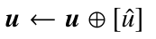
4:
5: until ˆu. is the end token or the length of u. exceeds the preset limit.
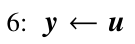
then
then
and
go
coffee
but
take
I am sleepy. I start a pot of
water tea …
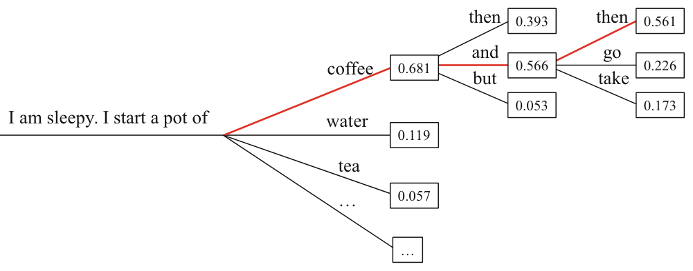
Currently, LLMs are primarily pre-trained using the language modeling task (see Eq. 6.1). Based on this training method, a basic decoding strategy is greedy search. Specifically, greedy search selects the token with the highest probability at each generation step, which can be represented as follows:
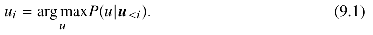
Figure 9.1 presents an example of greedy search. When predicting the next word for the sentence “I am sleepy. I start a pot of”, greedy search selects the word with the highest probability at the current step—“coffee.” The model then adds “coffee” to the context and continues this process iteratively. Greedy search is essentially a deterministic sampling method, and its effectiveness varies across different types of tasks. In tasks like machine translation and text summarization, where the output heavily depends on the input content, greedy search can often yield good results. However, in open-ended generation tasks (e.g., story generation and dialogues), greedy search may sometimes generate unnatural or repetitive sentences due to its focus on local optima [117].
In addition to greedy search, another common decoding strategy is random sampling. This method samples the next word based on the probability distribution given by the
I am sleepy. I start a pot of _____
strong
0.008
0.005
soup
water
0.119
black
0.008
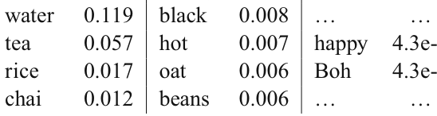
0.057
0.007
happy
4.3e-6
rice
0.017
0.006
4.3e-6
chai
0.012
beans
0.006
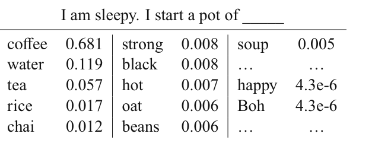
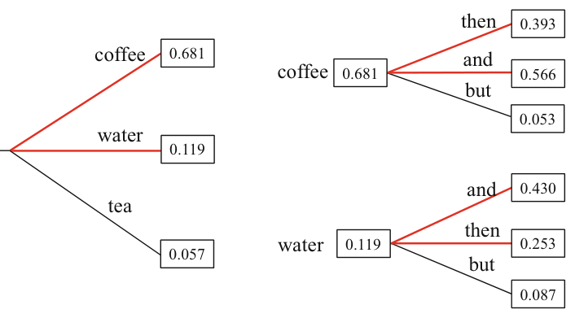
language model, which helps increase the diversity of the generated results:
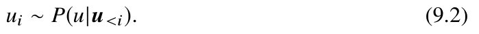
Figure 9.2 shows the probability distribution for the next word given a text prefix. Although the word “coffee” has a higher selection probability, a sampling-based strategy also allows for the possibility of choosing other words (such as “water” and “tea”), thereby increasing the diversity of the generated text.
9.1.2Improvements to Greedy Search#
Greedy search selects the token with the highest probability at each generation step, which can lead to text that appears more likely at each individual step but has a lower overall probability. To address this issue, the following improved strategies can be used.
- Beam search. During the decoding process, beam search [240] retains n sentences with the highest probabilities and selects the generated response with the highest overall probability. Here, n is referred to as the beam size. When n = 1., beam search degenerates into greedy search. As shown in Fig. 9.3 (n = 2.), in the first step, the two tokens with the highest probability, “coffee” and “water,” are kept as candidates; in the second step, expansions are made based on both “coffee” and “water” simultaneously, and the two text prefix segments with the highest joint probabilities, “coffee then” and “coffee and,” are chosen as candidates. In the following generation steps, expansions continue based on these two candidates, with the two sentences having the highest joint probabilities being selected at each step. Finally, once all candidate sentences are fully generated, the one with the highest overall generation probability is chosen as the final output. In practice, the beam size is typically set between 3 and 6. However, setting the beam size too large can substantially increase computational overhead and may even result in decreased performance.
- Length penalty. Since beam search and other decoding algorithms often compare candidate sentences of varying lengths, length penalty techniques (also known as length normalization) are commonly applied to avoid inconsistencies related to text length. Without the length penalty, traditional beam search methods tend to favor shorter sentences. This occurs because, with each token generated, the sentence’s overall probability is multiplied by a factor less than 1, causing the generation probability to decrease as the sentence lengthens. To counter this, a length penalty factor can be incorporated into the probability calculation to normalize the sentence likelihood, thus encouraging the model to generate longer sentences. Specifically, the negative logarithm of the sentence probability can be divided by Lα., where L is the length of the sentence and α. is the penalty coefficient, typically set to a value between 0.6. and 0.7.
- Repetition penalty. To alleviate the problem of greedy search which may generate duplicate text, an n-gram penalty can be used to avoid generating duplicate n-grams, where n is typically set to an integer between 3 and 5 in practice. Furthermore, researchers have proposed more moderate penalty mechanisms to reduce the probability of generating duplicate tokens, such as presence penalty and frequency penalty. Specifically, presence penalty reduces the probability of generating a token after it has been produced by subtracting a penalty term α. from the logits of the generated tokens (Eq. 5.11). Compared to presence penalty, frequency penalty tracks how often each token has been generated, subtracting the product of the token count and the penalty coefficient α. Therefore, the more frequently a token is generated, the greater the penalty will be. In practice, the penalty coefficient α. typically ranges from 0.1 to 1. These duplicate penalty methods are not only applicable to greedy search but can also be used with random sampling techniques.
9.1.3Improved Strategies for Random Sampling#
The random sampling–based method selects words1 from the entire vocabulary, which may lead to the generation of irrelevant or noisy words (such as “happy” and
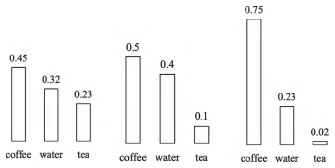
“Boh” in Fig. 9.2). To further improve the quality of the generated text, some sampling strategies can be employed to mitigate the impact of words with very low probabilities on the generation results.
- Temperature sampling. To adjust the randomness in the sampling process, an effective method is to modify the temperature coefficient in the softmax function:
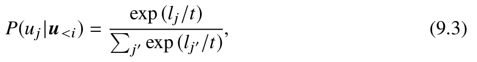
where lj . represents the logit of the candidate word j ., and t is the temperature coefficient. Specifically, lowering the temperature coefficient t makes the probability distribution more concentrated, thereby increasing the sampling probability of high-probability words while decreasing the sampling probability of low-probability words. When the temperature coefficient t is set to 1, the formula reduces to standard random sampling; when t approaches 0, it essentially becomes equivalent to greedy search, where the token with the highest probability is always selected; and when t approaches infinity, temperature sampling degenerates into uniform sampling. Figure 9.4 illustrates the probability distribution of the next word with temperature settings of 1.3, 1.0, and 0.7.
- Top-k sampling. Unlike temperature sampling, the top-k sampling strategy directly filters out lower-probability words, restricting the model to sample from the top k highest-probability words [241]. For example, in the generation process shown in Fig. 9.5a, when using the top-3 sampling strategy, the model will sample from the three highest-probability words—“coffee,” “water,” and “tea”—based on the original probability distribution.
- Top-p sampling. Since the top-k sampling strategy does not account for the overall probability distribution, a fixed constant k may not adapt well to different contexts. In
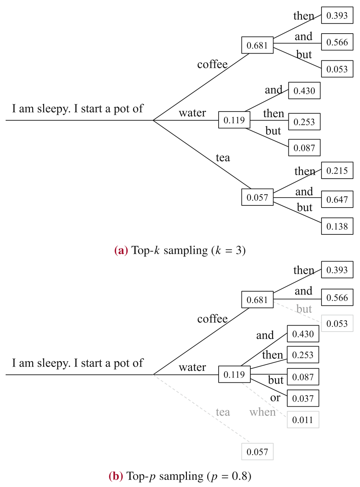
more deterministic generation scenarios (e.g., given the prefix “The highest mountain in the world is”), setting k to a value greater than 1 may easily introduce incorrect answers. Conversely, in scenarios requiring diversity (e.g., “My favorite city is”), setting k to a smaller value could limit the model’s diversity.
To address these issues, researchers propose the top-p sampling method (also known as nucleus sampling) [117]. The core
idea is to sample from the smallest possible set of tokens that meet a specific probability condition, requiring the cumulative probability of all tokens in the set to be greater than or equal to a preset threshold p. In practice, top-p sampling first sorts the tokens in descending order of generation probability and then incrementally adds tokens to a temporary set until the cumulative probability of the set first exceeds the threshold p. Figure 9.5b shows the decoding process of top-p sampling (p = 0.8.): in the first step, the cumulative probability of “coffee” and “water” is 0.681 + 0.119 = 0.8., reaching the preset threshold, so sampling will only occur among these two words, excluding the third word “tea.”
- Contrastive decoding. Typically, larger models exhibit stronger generation capabilities than smaller models, and thus, when predicting the next word, larger models tend to assign higher probabilities to important words than smaller models do. Based on this idea, contrastive decoding calculates the difference in the log-probability distributions between a larger model (e.g., GPT-2 XL) and a smaller model (e.g., GPT-2 small), then samples the next word based on the normalized difference distribution. To illustrate the working mechanism of contrastive decoding, consider the example of predicting the next word for the given phrase “Columbus was from Italy, and he was born in __,” where “1451” can be a good prediction. GPT-2 XL assigns a 15% probability to generating “Spain” and a 10% probability to “1451,” while GPT-2 small assigns a 10% probability to “Spain” and a 0.1% probability to “1451.” Although GPT-2 XL still has the highest probability for generating “Spain,” the probability of generating “1451” has significantly increased. Contrastive decoding can effectively leverage such distribution discrepancies to increase the sampling probability of important words during the decoding process.
9.1.4Practical Settings#
In practice, existing code libraries (such as Transformers) and public APIs for LLMs integrate various decoding strategies to suit different text generation tasks. Below are some representative decoding settings commonly used in popular language models or APIs.
temperatureesence_penalty frequency_penalty- T5. T5 uses a greedy search strategy by default. For translation and summarization tasks, it employs beam search (with a beam size of 4) combined with length penalty (penalty factor of 0.6) to optimize the generated results.
- GPT-3. GPT-3 applies beam search (with a beam size of 4) and length penalty (penalty factor of 0.6) across generation tasks.
- Alpaca. Alpaca primarily focuses on open-ended generation tasks, thus adopting sampling-based strategies, including top-k sampling (k = 50.) and top-p sampling (p = 0.9.). The temperature parameter is set to 0.7 to ensure reliable results while enhancing the diversity of the generated output.
- LLaMA. LLaMA uses different decoding strategies depending on the specific task. For question-answering tasks, it uses greedy search, while for code generation tasks, it adopts sampling strategies with temperature settings of 0.1 (for Pass@1) and 0.8 (for Pass@100).
- OpenAI API. OpenAI supports multiple decoding strategies, including greedy via the best_of parameter), temperature sampling (by adjusting the temperature parameter), and top-p sampling (through the top_p parameter). Additionally, it supports repetition penalty based on presence penalty and frequency penalty, controlled by the pr
9.2Efficiency Optimization#
The previous section has discussed typical decoding algorithms for model inference. However, in practice, due to the autoregressive nature of generating output token by token, these algorithms often suffer from low efficiency. This section will first provide a quantitative analysis of the efficiency of model inference,2 followed by an introduction to typical methods designed to optimize efficiency.
9.2.1Inference Efficiency Analysis#
This subsection will first introduce the two main stages of the inference process (prefill and decoding), followed by an efficiency analysis of each stage.3
2 In this chapter, we use the terms “decoding” and “inference” respectively in different contexts: decoding primarily refers to the algorithmic logic of token sampling, while inference focuses on the entire process of generating the response content.
3This section is primarily based on existing work [242].
User input: What is the normal body temperature of a human in degrees Celsius?
Response of greedy search
Model output: The normal surface body temperature of humans is approximately
37 ◦.C (98.6 ◦.F). However, body temperature may vary due to individual differences,
environmental conditions, and measurement methods. Under normal circumstances,
the core internal temperature of the human body remains relatively stable, while the
surface temperature may fluctuate due to external environment and physical activities.
Therefore, 37 ◦.C is generally considered a reference value for normal human body
temperature, but actual body temperature may exhibit slight variations.
Response of greedy search with frequency penalty (α = 1.)
Model output: The normal surface body temperature of humans is approximately
37 ◦.C (98.6 ◦.F). However, body temperature may vary due to individual differences,
environmental conditions, and measurement methods. Because the human body has
mechanisms to regulate temperature, the internal temperature usually remains relatively
stable under normal circumstances, without significant fluctuations.
Response of top-p sampling (p = 0.95.)
Model output: The normal surface body temperature of humans ranges between 36.5
and 37.5 ◦.C. However, the normal underarm temperature usually falls between 36.5 and
37.2 ◦.C, while the rectal temperature is typically 0.2 to 0.4◦. higher than the underarm
temperature. The normal surface temperature of a healthy adult generally refers to the
skin surface temperature, while the normal underarm temperature reflects changes in
internal body temperature. In medical examinations, underarm temperature is often
considered more accurate than oral and rectal temperatures because of differences in
measurement methods.
Example 9.1 Example outputs of the YuLan model using different decoding
strategies
Prefill and Decoding
In Sect. 9.1.1, Algorithm 2 presents the original autoregressive decoding process. Specifically, consider two consecutive forward passes within the loop: the first
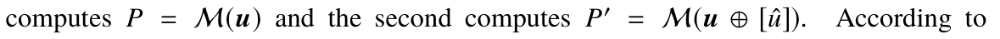
Eq. 5.2, the operations for these two forward passes are as follows: Q = XW Q. and
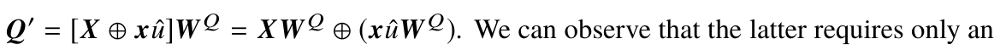
additional computation related to the state x ˆu. of the newly generated token ˆu. Similarly, for Eqs. 5.3, 5.4, and 5.8, only the state x ˆu. of the newly generated token ˆu. needs to be computed, without recalculating the states of previous tokens.
However, a corresponding adjustment is required for the attention computation (Eq. 5.5), and the modified equation is given as follows:
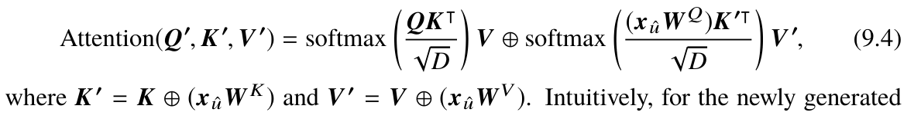
token ˆu., it needs to perform attention as a query against the keys and values of the previous tokens. In practice, this can be achieved by caching the key-value states of the previous sequence and using the cached key-value matrices to compute the current multi-head attention when generating the next token. This optimization is referred to as key-value caching (KV caching).
Algorithm 3 presents the pseudocode for greedy decoding with KV caching. The inference process can be divided into two stages: (1) prefill stage. The state of the input sequence is computed at once, and the key-value matrices are cached (lines 1–3 in Algorithm 3); (2) decoding stage. Only the state of the newly generated token is computed, and tokens are generated in an autoregressive manner while continuously updating the KV cache until the generation process ends (lines 4–9 in Algorithm 3).
Algorithm 3 Greedy decoding based on key-value cache optimization
Require: Model M., input token sequence u.
Ensure: Output token sequence y.
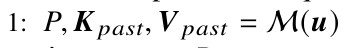
2: ˆu = arg max P.
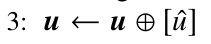
4: while ˆu. is not the end token and the length of u. does not exceed the preset length do
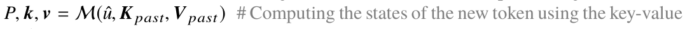
5:
cache
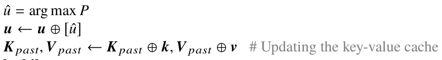
6:
7:
8:
9: end while
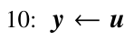
Quantitative Metrics for Inference Efficiency
To quantitatively analyze inference efficiency, we first introduce the computing power and memory bandwidth to evaluate the efficiency of a GPU. The computing power of a GPU refers to the number of floating-point operations that a GPU can perform per second, measured in FLOP/s, while the memory bandwidth of a GPU represents the amount of memory read and write operations that it can perform per second, measured in bytes/s. The ratio of compute to bandwidth is known as the maximum arithmetic intensity of the GPU, which is denoted as Imax. and measured in FLOP/byte. For instance, the half-precision floating-point computing power of an A100-80G GPU is 312 TFLOP/s, which means that it can perform 3.12 × 1014. half-precision floating-point operations per second; the memory bandwidth of A100 GPU is 2039 GB/s. Based on these values, the maximum arithmetic intensity of the A100 GPU is approximately 142.51 FLOP/byte.
Similarly, the performance of each operation (e.g., matrix multiplication) when running the model can be measured by two metrics: computation amount and memory access amount. The computation amount refers to the total number of floating-point operations required to execute the model, measured in FLOP, while the memory access represents the total amount of memory read and write operations needed for the model, measured in bytes. Similar to maximum arithmetic intensity of a GPU, the ratio of the computation amount to the memory access is called the model’s arithmetic intensity I, with units of FLOP/byte. When the model’s arithmetic intensity I is less than the GPU’s maximum arithmetic intensity Imax ., it indicates that the GPU’s theoretical maximum memory access speed is insufficient to meet the demands of the actual computation. In this case, the model’s runtime efficiency is primarily limited by the memory access speed, a situation known as memory-bound. Conversely, when I is greater than Imax .,it implies that the GPU’s theoretical maximum floating-point operation speed is insufficient for the computation requirements. As a result, the GPU’s computing power becomes the primary bottleneck in the model’s performance, a situation referred to as compute-bound.
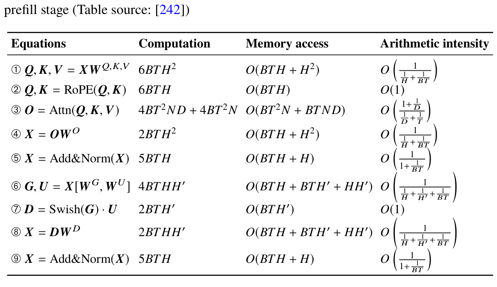
Arithmetic intensity Equations
Computation
Memory access
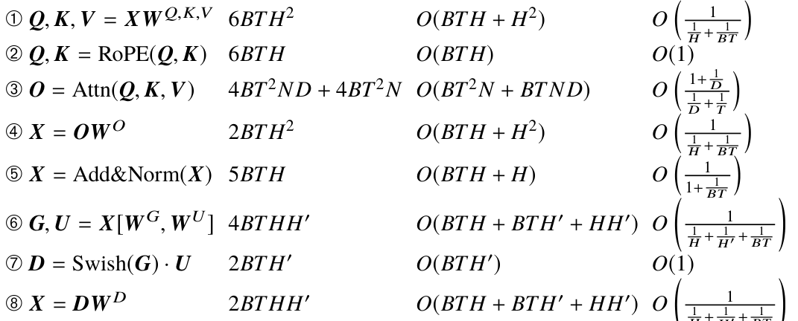
6BT H.
2BT H2.
2BT H .
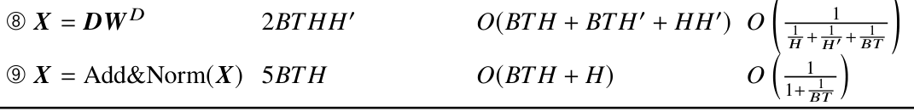
2BT HH .
Estimation of Computation, Memory Access, and Arithmetic Intensity
This part uses the LLaMA model as an example to analyze the computation amount and memory access during the prefill and decoding stages.4 We will derive the corresponding arithmetic intensity for each stage. The computation amount of each equation during the prefill stage is the same as that of the forward pass during the training stage. Table 9.1 lists the computation amount during the prefill stage, with a detailed analysis provided in Sect. 6.4.2.
Tips (Memory Access of Matrix Multiplication)
The memory access amount required for the multiplication of matrix A ∈ Rn×m. and matrix
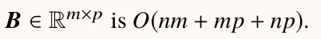
Next, we analyze the memory access for each component during the prefill stage, using the same notations as in Sect. 6.4.2:
- Attention. The query matrix in the attention mechanism requires a linear transformation (Eq. ➀ in Table 9.1), where X ∈ RB×T×H . and W Q ∈ RH×H . Thus, the memory access amount of this operation is O(BT H + H2). The complexity for the linear mapping 4In the analysis of memory access, our book uses the asymptotic notation O to represent the complexity of memory access amount, while the constant part of the complexity depends on the specific implementation
of the keys and values is the same as for the queries. For the computation of multi-head attention (Eq. ➂), the memory access can be divided into three parts: first, the matrix multiplication of queries Q. and keys K . (Q, K ∈ RB×N×T×D.) requires a memory access amount of O(BT N D + BT2N).; then, the resulting matrix from the multiplication of Q. √ and K . is standardized (divided by
D.), followed by the calculation of softmax., with a memory access amount of O(BT2N).; finally, the matrix obtained is multiplied by the values V ., yielding a memory access amount of O(BT2N + BT N D). Combining all three parts, the total memory access amount for multi-head attention is O(BT2N + BT N D). After the attention computation, the output linear transformation in Eq. ➃ is similar to Eq. ➀, with a memory access amount of O(BT H + H2).
- Feed-forward network. There are three linear transformations in the feed-forward network (Eqs. ➅ and ➇), where X ∈ RB×T×H . and W G ∈ RH×H ., resulting in a memory access amount of O(BT H + BT H + HH ). The activation computation in Eq. ➆ needs memory access amount of O(BT H ).
- Others. Finally, RoPE (Eq. ➁), normalization (Eq. ➄), and residual connections (Eq. ➈) all have memory access of O(BT H). Next, we analyze computation amount, memory access, and arithmetic intensity during the decoding stage, as detailed in Table 9.2. Compared to the prefill stage, the decoding stage treats the input sequence length as T = 1. for most operations. The only exceptions are the multi-head attention computation (Eq. 9.4) and the additional KV cache update operation (line 8 of Algorithm 3). Apart from these two operations, the computation and memory access for other operations in the decoding stage can be calculated by substituting T with 1 in the equations of the prefill stage. For multi-head attention, where the keys and values remain matrices, the memory access amount becomes O(BT N + BT N D + BN D). For the KV cache update operation, it has a memory access amount of O(BT N D). without using memory optimization algorithms. If optimization methods like PagedAttention (see Sect. 9.2.2) are used, the memory access amount can be reduced to O(BN D). Memory Wall and Bottleneck Analysis Based on the above analysis, we can calculate the computation and memory access for both the prefill and decoding stages. This allows us to compute the ratio for each operation,
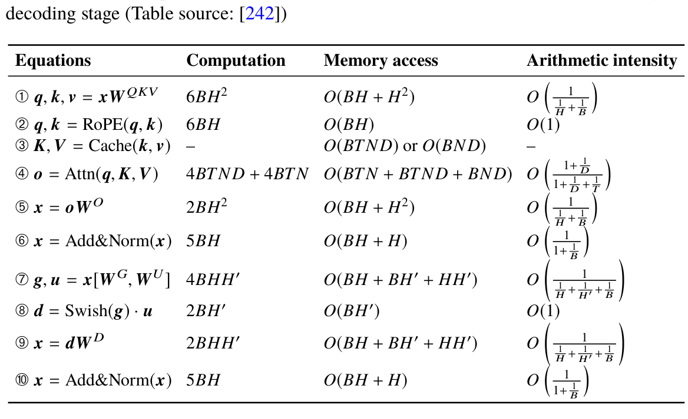
Computation
Arithmetic intensity Equations
Memory access

6BH2.
6BH.
2BH2.
2BH .
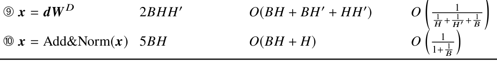
2BHH .
yielding the arithmetic intensity I, which helps to identify bottleneck operations in the decoding stage.
We will analyze using the LLaMA (7B) model as an example (where N = 32., D = 128., and H = 4096.). During the prefill stage, assuming a batch size of 8 and a sequence length of 1024 (i.e., B = 8., T = 1024.), substituting these values into Table 9.1 yields the corresponding arithmetic intensity values: the arithmetic intensity for linear transformations (Eqs. ➀, ➃, ➅, ➇) is approximately 2730.67, for multi-head attention (Eq. ➂) it is about 114.67, and for the other operations (Eqs. ➁, ➄, ➆, ➈) it is around 1. When using an A100 (80G) (with a maximum arithmetic intensity Imax. of 142.51), the arithmetic intensity of the linear transformations and multi-head attention is higher than or close to this value. Considering that these operations account for the majority of computations in the prefill stage, it indicates that the stage is limited by the computing power of the GPU, which is compute-bound.
Similarly, substituting these values into the arithmetic intensity equations in Table 9.2 shows that, in the decoding stage, the arithmetic intensity of all linear transformations and multi-head attention operations does not exceed 8, far lower than the A100 GPU’s maximum arithmetic intensity. This indicates that the decoding stage is essentially constrained by the memory bandwidth of the GPU, which is memory-bound—a situation
commonly referred to as the memory wall issue. From this analysis, we observe that inefficiencies in the inference process mainly occur during the decoding stage. Next, we will discuss methods to improve the efficiency of the decoding stage, focusing on both system optimization and algorithm optimization.
9.2.2System-Level Optimization#
To address the memory wall issue, a straightforward approach is to reduce the memory access of related operations, thereby increasing the arithmetic intensity. This subsection introduces some system-level optimization methods to achieve the reduction of memory access.
FlashAttention
FlashAttention [243] is an optimization method for the original attention module (Eq. 5.5) that significantly reduces the memory access in attention computation, effectively boosting arithmetic intensity. The core idea of FlashAttention is to minimize the storage of intermediate calculation results, directly computing the final output. In conducting the attention process (i.e., softmax(QK
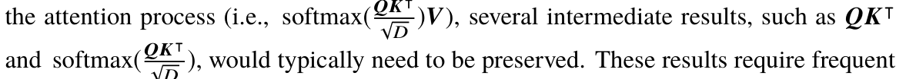
D )., would typically need to be preserved. These results require frequent writes to GPU memory, leading to substantial memory read-write operations. To address this issue, FlashAttention employs techniques such as matrix blocking and operator fusion. It keeps intermediate results in cache until the final output is produced before writing to GPU memory, significantly reducing the amount of memory access.
Moreover, FlashAttention also reduces peak memory usage (see Sect. 6.4.4). When using FlashAttention, the computation time for multi-head attention in LLaMA-2 (7B) with a sequence length of 2048 and a batch size of 8 can be reduced to just one tenth of the time required by the standard attention method.
PagedAttention
PagedAttention [162] optimizes key-value (KV) cache concatenation and attention computation, significantly reducing memory access during these operations and improving arithmetic intensity. In traditional KV cache concatenation, each concatenation operation requires new GPU memory allocation and involves copying both the original
cache and the hidden states of newly generated tokens into this newly allocated space. This frequent memory allocation leads to repetitive memory reads and writes, resulting in substantial memory fragmentation. PagedAttention addresses this issue by employing a GPU memory paging strategy, where memory is pre-partitioned into blocks that are reserved for future KV cache updates. This method substantially reduces the need for repeated memory allocation during cache concatenation.
Additionally, PagedAttention improves attention computation by increasing parallelism to minimize memory access. Specifically, during the decoding stage, the current token serves as the query vector, which computes attention with the previously generated sequence. PagedAttention enhances this process by using the paging technique for the KV cache and applying operator fusion, allowing parallel computations between the query vector and multiple paged KV cache blocks. This method significantly boosts computational efficiency.
Batch Management Optimization
From Table 9.2, we observe that arithmetic intensity is lower when the batch size (B) is small, resulting in inefficient decoding. To alleviate this issue, batch management optimization aims to increase batch size during computation to boost arithmetic intensity. A notable technique for achieving this is continuous batching [162], introduced by vLLM (detailed in Sect. 9.2.4).
In the traditional inference process, computation for the next batch is delayed until all instances in the current batch have completed their generation. However, since instances within a batch often have varying input and output lengths, this results in inefficiencies as the system waits for the longest instance to finish. Unlike traditional fixed batching, continuous batching treats each instance as an individual request, breaking it down into a prefill iteration and several single-step decoding iterations. In practice, continuous batching uses a heuristic algorithm to determine which requests should be processed in the prefill phase or in subsequent single-step decoding iterations. By handling more requests simultaneously (effectively increasing the batch size), continuous batching improves arithmetic intensity. Additionally, DeepSpeed-MII (discussed in Sect. 9.2.4) introduces Dynamic SplitFuse, which divides the prefill stage into multiple iterations, enabling the prefill and decoding stages to occur simultaneously in a single computation. This further boosts batch size and decoding throughput.
Batch management optimization is critical for large-scale online model services, such as ChatGPT’s web interface, which must efficiently handle a massive volume of user requests and deliver results promptly. Traditional batch generation leads to high service latency, as new requests must wait for previous ones to complete. By using advanced batch management techniques, requests can be processed with finer granularity, enabling the simultaneous handling of multiple requests. This results in more efficient online services, reducing latency and improving overall throughput.
9.2.3Algorithm-Level Optimization#
In addition to system-level optimization methods, existing research has proposed several algorithmic improvements to autoregressive strategies aimed at enhancing inference efficiency. Below, we introduce four commonly used optimization algorithms: speculative decoding, cascade inference, non-autoregressive decoding, and early exiting. Speculative Decoding
Intuitively, the difficulty of generation steps in language modeling varies. For example, predicting the next token for the phrase “The founder of Microsoft is” might be challenging, while predicting the next token for “The founder of Microsoft is Bill” is relatively easier, even for a smaller model. Based on this insight, speculative decoding [244] proposes using a smaller, more efficient model (e.g., an n-gram statistical model or a smaller pre-trained model) to autoregressively generate several tokens at a time. After each step, a large model—utilizing computational resources roughly equivalent to one decoding step—is used for verification to check whether each generated token is the highest-probability output for the current step (greedy decoding). This process continues iteratively between the small and large models until the entire sequence is generated. Experiments show that speculative decoding does not compromise the quality of the large language model’s output and typically achieves a speedup of about two times, making it a widely adopted optimization technique for inference.
To help readers understand, the following example illustrates the speculative decoding process. Suppose the input is “Give me six hours to chop down a tree,” and the large model’s output is “I will spend the first four sharpening the axe.” In total, nine words
need to be generated, requiring nine iterations of the generation process. If speculative decoding is used, the first step is to use the small model to generate three words, assuming the result is “I will use.” The large model then verifies this, finding the first two tokens correct but the third token incorrect. It corrects the third token to “I will spend.” In the second step, the small model generates three words, assuming the result is “four hours to.” The large model detects an error in the first token and corrects it to “the.” In the third step, the small model generates “first three sharpening,” and the large model finds an error in the second token, correcting it to “first four.” In the fourth step, the small model generates “sharpening the axe,” and the large model verifies them all as correct. Reviewing this generation process, the small model generated 12 tokens in total, while the large model verified four times, resulting in a more efficient process compared to the original nine generation steps of the large model.
Cascade Decoding
Similar to speculative decoding, cascade decoding recognizes that different requests vary in difficulty and uses a sequence of models to handle them, thereby optimizing inference efficiency. FrugalGPT [245] introduces a pipeline of models, ordered by their efficiency from high to low. Requests are processed through these models sequentially, and after each step, a specially trained binary classifier evaluates whether the generated output meets the task requirements. If the output is deemed satisfactory, it is not passed to subsequent models, thus reducing computation time and enhancing overall efficiency. This method can be applied to both open-source models and commercial APIs, and users can adjust the classifier’s threshold to strike a balance between generation quality and efficiency.
Non-autoregressive Decoding
Existing inference strategies mainly adopt an autoregressive approach, generating tokens one by one, which is the primary cause of low inference efficiency. To address this limitation, researchers have proposed non-autoregressive decoding [246], where all tokens are generated simultaneously based on the input. However, this method often results in lower generation quality compared to autoregressive methods. To improve the quality of generated text, some studies attempt to combine these two approaches, introducing semi-autoregressive decoding. In this approach, a group of tokens (e.g., 3 to
10 tokens) is generated at once, and these tokens are then used as input to generate the next group. Nevertheless, because LLMs are typically pre-trained to predict the next token in an autoregressive manner, they cannot directly perform non- or semi-autoregressive generation. To overcome this, Medusa [247] extends the Vicuna model by training two additional prediction heads to predict the second and third tokens, thereby enabling the simultaneous generation of three tokens.
Although non- and semi-autoregressive strategies improve efficiency, the quality of the generated text often falls short of that produced by autoregressive decoding. As a result, these methods are rarely used directly in practice. Instead, they are typically employed to accelerate the autoregressive decoding process of LLMs through speculative decoding. For example, after Medusa generates three tokens in parallel, the original Vicuna model is then used for verification, ensuring the quality of the generated output. Early Exit
Research has shown that in multi-layer Transformer models, it is not always necessary to perform computations across all layers to reliably predict the next token [248]. Based on this idea, researchers have developed an early exit mechanism for generation. During the decoding stage, if certain conditions of early exit are met, intermediate results from the first few layers can be used to generate tokens, enhancing inference efficiency. In practice, a common early exit method involves using a prediction head (Eq. 5.11) on each layer’s output to obtain the probability distribution for the next token. The entropy of this distribution is then calculated. If the entropy falls below a predefined threshold—indicating that the probability of a particular token is significantly high—the decoding process can exit early, avoiding further computations in subsequent layers. By adjusting this threshold, it becomes possible to effectively balance inference efficiency with generation quality.
Additionally, researchers have proposed the mixture-of-depths method [249] to dynamically adjust the computation for each layer.
Similar to MoE architecture (see Sect. 5.2.6), this method uses a routing network to calculate a score for each layer’s input. If the score exceeds a predefined threshold, the layer’s computation is performed; otherwise, the layer is skipped. Unlike traditional early exit mechanisms that skip all subsequent layers, the mixture-of-depths method selectively skips certain layers. Since
different layers serve distinct functions, this selective approach allows for a more efficient use of the unique properties of each layer.
9.2.4Decoding Methods in Practice#
This subsection introduces some commonly used libraries for language model decoding and explores the optimization strategies they support for the decoding process. We will then focus on the vLLM library, providing specific code examples to demonstrate its usage.
Overview of Common Libraries
Current inference libraries are mainly implemented with a focus on system-level optimizations and are compatible with most open-source models (e.g., LLaMA), making them relatively easy to use. Below are several widely used libraries for large language model inference:
ma/Llama-2-7b-chat-hf
import vllm
# Three prompts formatted for LLaMA-2 Chat
prompts = [
'[INST] How are you? [/INST]',
'[INST] 1 + 1 = ? [/INST]',
'[INST] Can you tell me a joke? [/INST]',# Initialize the vLLM model
model = vllm.LLM(model='meta-llama/Llama-2-7b-chat-hf')
# Set vLLM decoding parameters
sampling_params = vllm.SamplingParams(
temperature=0, # Temperature of 0 for greedy search
max_tokens=2048, # Maximum number of new tokens to generate
presence_penalty=0, # Presence penalty coefficient
frequency_penalty=0, # Frequency penalty coefficient# Generate text using the vLLM model
out = model.generate(prompts, sampling_params=sampling_params)
for prompt, it in zip(prompts, out):
print(f'input = {prompt!r}\noutput = {it.outputs[0].text!r}')
# Example 1
# input = '[INST] How are you? [/INST]'
# output = ' I\'m just an AI, I don\'t have feelings or emotions like humans do, so I don\'t have a physical state of being such as "good" or "bad."- llama.cpp. llama.cpp is a library implemented entirely in C/C++, offering robust cross-platform compatibility. It can run on various computational devices, including CPU, NVIDIA GPU, AMD GPU, and Apple chips. Additionally, llama.cpp supports multiple quantization precisions, ranging from 1.5-bit to 8-bit, significantly reducing memory consumption.
- vLLM. vLLM is a fast, efficient, and user-friendly inference library that has undergone extensive optimization to enhance inference efficiency. It uses paged storage for key-value caching and introduces the PagedAttention technique to greatly improve the efficiency of attention computations during the decoding stage. Moreover, it supports various decoding strategies and incorporates batch management optimization techniques, enabling efficient deployment of LLMs in real-world scenarios. vLLM is also highly compatible, allowing seamless integration with open-source models from the Transformers library.
- DeepSpeed-MII. DeepSpeed-MII is an inference library developed by Microsoft for LLMs. It supports a variety of decoding strategies and incorporates techniques like batch management optimization and parallel decoding. To fully exploit the computational potential of GPUs, DeepSpeed-MII introduces Dynamic SplitFuse, which splits input sequences into multiple sub-blocks. This enables the simultaneous handling of both prefill and decoding requests, thereby increasing batch data processing and boosting decoding throughput.
- FlexFlow. The FlexFlow library is optimized for speculative decoding algorithms, enhancing the efficiency of the speculative decoding process. In earlier speculative decoding methods, the small model decoding and large model verification alternate, with only one speculative result being verified at a time. FlexFlow improves upon this by introducing a tree-based attention mechanism, which concatenates multiple speculative results from the small model into a single sequence. By modifying the attention mask, the large model can simultaneously verify multiple speculative results, significantly boosting computational parallelism and improving overall efficiency. vLLM Code Practice The following example demonstrates how to perform inference using the meta-lla 8 ] 19 )
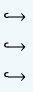
I\'m here to help answer your questions and provide information to the
best of my ability, so please feel free to ask me anything!'# Example 2
# input = '[INST] 1 + 1 = ? [/INST]'
# output = ' The answer to 1 + 1 is 2.'
# Example 3
# input = '[INST] Can you tell me a joke? [/INST]'
# output = " Of course! Here's a classic one:\n\nWhy don't scientists trust atoms?\n\nBecause they make up everything!\n\nI hope that made you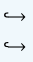
smile! Do you want to hear another one?"python -m vllm.entrypoints.api_server --port 8000 --model
meta-llama/Llama-2-7b-chat-hf --dtype bfloat16 --tensor-parallel-size 1parallel-sizecurl http://localhost:8000/v1/completions \
-H "Content-Type: application/json" \
-d '{
"prompt": "[INST] 1 + 1 = ? [/INST]",
"max_tokens": 20,
"temperature": 0
}'Additionally, vLLM can be configured to run as a web service, similar to ChatGPT’s web interface, keeping the model running continuously. The following command starts the API server: → The port parameter specifies the port number for the server, while the tensor-multi-GPU deployment (typically set to the number of GPUs). Once the server is running, you can make requests to this port using a command similar to the OpenAI API format:
9.3Model Quantization#
Due to the huge number of parameters in LLMs, a substantial amount of GPU memory is required during model inference, resulting in high deployment costs in practical applications. This section introduces a widely used model compression technique, which can reduce memory usage and enable LLMs to run in resource-constrained environments.
9.3.1Fundamentals of Quantization#
In model compression, quantization typically refers to the mapping process from floating-point numbers to integers [250]. A commonly used approach is 8-bit integer quantization, known as INT8 quantization. In neural network models, there are generally two types of data that need to be quantized: weights (i.e., model parameters) and activations, both of which are initially represented and stored as floating-point numbers. Mathematical Representation
The quantization process can be viewed as a function transformation, with the goal of mapping continuous input values to a discrete output set. Typically, this process involves approximation techniques, such as rounding or truncation. The general form of the quantization function is as follows:
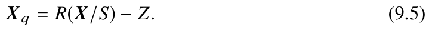
Through the above transformation, the quantization algorithm converts the floating-point matrix X . into the corresponding quantized value matrix Xq. Here, S denotes the scaling factor that defines the clipping range, Z denotes the zero-point factor used to achieve symmetric or asymmetric quantization, and R(·). represents the approximation function that maps floating-point numbers to integers. The clipping range plays a critical role in the performance of quantization, and it often needs to be calibrated based on the actual data distribution, using either static (offline) or dynamic (runtime) methods.
As the inverse process of the above transformation, dequantization corresponds to recovering the original values from the quantized values. This process adds the zero-point factor to the quantized values first, followed by multiplication by the scaling factor:
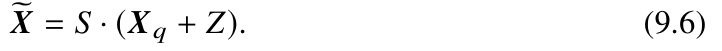
Furthermore, the quantization error can be defined as the numerical difference between the original values X . and the recovered values X .:
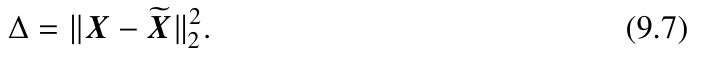
Common Settings
Based on the aforementioned forms of quantization functions, we will now introduce some common configurations for these functions.
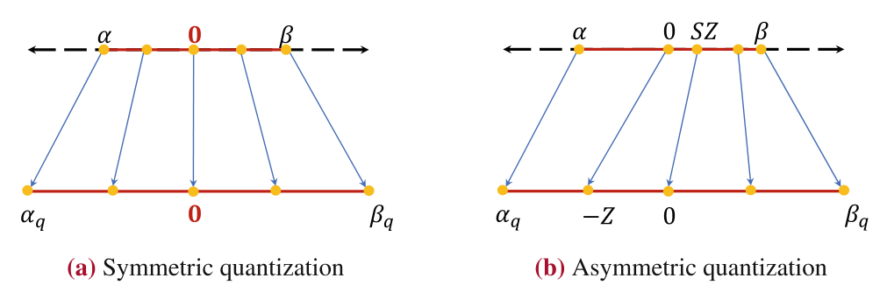
- Uniform quantization and non-uniform quantization. Uniform quantization refers to the process where the quantization function maps continuous values into a discretely represented form that is evenly distributed. This approach facilitates efficient processing in computers, as the intervals between quantized values remain constant. On the other hand, non-uniform quantization methods produce quantized values that are more flexible in their distribution. These methods allow the quantization process to be adjusted based on the range and characteristics of the input data. Despite the flexibility offered by nonuniform quantization, uniform quantization methods are more commonly used in practice due to their simplicity and computational efficiency.
- Symmetric quantization and asymmetric quantization. Based on whether the zero-point factor Z (Eq. 9.5) is zero, uniform quantization can be further divided into two categories: symmetric quantization (Z = 0.) and asymmetric quantization (Z 0.). As shown in Fig. 9.6a and b, the key distinction between symmetric and asymmetric quantization is the mapping of the zero-point in the integer range: symmetric quantization requires that the zero-point in the original input data (x = 0.) still corresponds to the zero-point in the integer range after quantization; whereas in asymmetric quantization, the zero-point in the integer range corresponds to the input value S · Z. To clarify this with an example, let us consider an 8-bit quantization case. Symmetric quantization converts the input value x into an 8-bit integer through a mapping formula. If it is a signed integer, the range can be set to [-128, 127]., which is suitable for cases where the input values are symmetrically distributed around zero; if it is an unsigned integer, the range is set to [0, 255]., which is more appropriate for cases where the input values are mainly distributed on one side of the zero-point.
- Quantization granularity. In neural network models, input data and model weights are typically represented in batched matrices (i.e., tensors). The scale of data involved in quantization at each instance determines the quantization granularity, and different granularities can be applied in practice. As a form of coarse granularity quantization, tensor-level quantization defines a single set of quantization parameters (i.e., S and Z) for each tensor. To enhance quantization accuracy, multiple sets of quantization parameters can be defined for each tensor by grouping the columns of a weight matrix into several subsets for group-level quantization. For example, one could quantize 128 columns as a single group [251]. Additionally, specific quantization parameters can be applied to individual columns (also referred to as channels) of the weight matrix, a technique known as channel-level quantization. This further refines the quantization process, allowing for more precise control over the representation of each channel. In neural network quantization, as the quantization granularity becomes finer (from tensor-level quantization to group-level quantization), the quantization accuracy increases accordingly, but it also introduces more quantization parameters, leading to greater computational overhead. Among these methods, tensor-level quantization offers coarser granularity, which may result in larger errors but is simpler to implement in hardware. Examples and Practices of Quantization To help readers better understand quantization algorithms, we will introduce a specific example of a quantization algorithm. Here, all results are obtained by running the sample code, and for clarity, they are rounded to four decimal places.
- Asymmetric quantization example. Here, we take 8-bit quantization as an example to explain the computation process of asymmetric uniform quantization. Given the input data X = [[1.2, 2.4, 3.6], [11.2, 12.4, 13.6]]., the corresponding range of values is [1.2, 13.6]. To quantize it into the integer representation range [-128, 127]., we need to determine the corresponding quantization parameters S and Z, such that the boundary values 1.2. and 13.6. are mapped to - 128. and 127, respectively. According to Eq. 9.6, we can obtain the following system of linear equations:
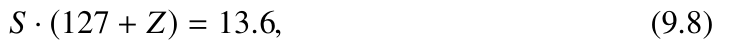
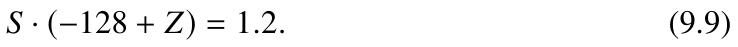
It is important to note that S is a floating-point number while Z is an integer. We can
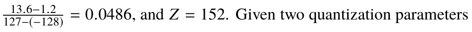
calculate that S =
and Eq. 9.5, we can obtain quantized values as Xq = [[-127, -103, -78], [78, 103, 127]]. According to Eq. 9.6, we can compute corresponding results after dequantization as
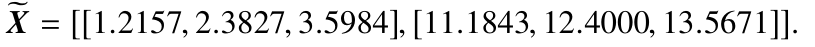
import torch
import numpy as np
def quantize_func(x, scales, zero_point, n_bits=8):
x_q = (x.div(scales) - zero_point).round()
x_q_clipped = torch.clamp(x_q, min=alpha_q, max=beta_q)
return x_q_clipped- Symmetric quantization example. For symmetric quantization, the zero-point in the data needs to be mapped to the zero-point of the corresponding integer range (i.e., Z = 0.), as shown in Fig. 9.6a. We continue using the previously mentioned input X . as an example for explanation. To ensure that all data can be mapped to the corresponding integer range, symmetric quantization needs to cover the range of input data, which is [-13.6, 13.6]. In this case, we can calculate the scaling factor as S = 0.1067., yielding the quantized values Xq = [[11, 22, 34], [105, 116, 127]]. and the dequantized values as X = [[1.1733, 2.3467, 3.6267],. [11.2000, 12.3733, 13.5467]]. after dequantization. Compared to asymmetric quantization, symmetric quantization needs to cover a larger range, which may exceed the actual numeric range of the data. In this example, the range [-13.6, 1.2). contains no actual values, resulting in wasted representational space. Additionally, because symmetric quantization covers a broader range, it introduces greater quantization errors. As a result, the difference between the dequantized values from symmetric quantization and the original values is larger than the difference with asymmetric quantization.
- Code practice. We will now introduce the code implementation for quantization and dequantization. First, we can define the functions quantize_func and dequant ize_func, which represent the quantization and dequantization processes, respectively. Then, based on the method introduced in the previous asymmetric quantization example, we compute the quantization parameters for the input data and then apply quantization and dequantization using these parameters. The specific code is as follows:
def dequantize_func(x_q, scales, zero_point):
x_q = x_q.to(torch.int32)
x = scales * (x_q + zero_point)
x = x.to(torch.float32)
return x
if __name__ == "__main__":
# Input configuration
random_seed = 0
np.random.seed(random_seed)
m = 2
p = 3
alpha = -100.0 # Minimum input value is -100
beta = 80.0 # Maximum input value is 80
X = np.random.uniform(low=alpha, high=beta,
size=(m, p)).astype(np.float32)
float_x = torch.from_numpy(X)
# Quantization parameter configuration
num_bits = 8
alpha_q = -2**(num_bits - 1)
beta_q = 2**(num_bits - 1) - 1
# Calculate scales and zero_point
S = (beta - alpha) / (beta_q - alpha_q)
Z = int((alpha * beta_q - beta * alpha_q) / (beta - alpha))
# Quantization process
x_q_clip = quantize_func(float_x, S, Z)
print(f"Input:\n{float_x}\n")
# tensor([[ -1.2136,
28.7341,
8.4974],
#
[ -1.9210, -23.7421,
16.2609]])
print(f"{num_bits} bits quantized:\n{x_q_clip}")
# tensor([[ 11.,
54.,
25.],
#
[ 10., -21.,
36.]])
x_re = dequantize_func(x_q_clip,S,Z)
print(f"After dequantization:\n{x_re}")
# tensor([[ -1.4118,
28.9412,
8.4706],
#
[ -2.1176, -24.0000,
16.2353]])9.3.2Post-Training Quantization Methods#
Building on the background knowledge of quantization, this subsection focuses on quantization methods specifically relevant to LLMs. Quantization methods can generally be classified into two main categories: quantization-aware training (QAT) and post-training quantization (PTQ). As the names suggest, QAT requires updating the model’s weights during the quantization process, whereas PTQ does not involve any weight updates after training. When selecting or designing quantization methods for LLMs, two key factors must be considered in comparison to small models. First, LLMs have a much larger parameter scale, which necessitates careful consideration of computational overhead when developing quantization algorithms. Typically, PTQ methods are less
computationally expensive and are more commonly used in practice. Second, LLMs often exhibit different numerical distribution characteristics (e.g., the presence of large outliers in activation values), which requires designing quantization methods that maintain or improve representational accuracy. This subsection provides a brief overview of typical post-training quantization methods tailored for LLMs.5
Typical Weight Quantization Methods
In existing work, weight quantization methods are primarily designed by minimizing
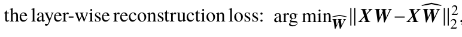
2., where X ., W ., and W .represent the input, the original weights, and the quantized weights, respectively. The following introduces two representative weight quantization methods: GPTQ and AWQ.
To effectively optimize this objective function, GPTQ [252] builds on layer-wise quantization by grouping the weight matrix by columns (e.g., 128 columns per group). Within each group, columns are processed sequentially. After a column is quantized, the remaining unquantized parameters in the group are adjusted to compensate for the accuracy loss that results from quantization. In its implementation, GPTQ also uses specially designed optimization techniques to accelerate the entire process, such as lazy batch update and Cholesky reformulation. It has been empirically shown that GPTQ is capable of achieving weight quantization for LLMs with 3-bit or 4-bit precision.
Furthermore, AWQ [251] finds that during layer-wise and group-wise weight quantization, only a small portion of parameters (0.1% to 1%) has a significant impact on model performance. These parameters, often corresponding to dimensions with larger activation values, are referred to as salient weights. To preserve the quantization precision for salient weights, the AWQ method introduces an activation-aware scaling strategy, modifying the
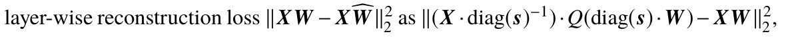
2. as
where Q is the quantization function. By introducing the scaling factor s., the AWQ algorithm can more effectively preserve salient weights, thereby reducing quantization errors.
5This book focuses on quantization methods for LLMs and therefore does not include work on early small
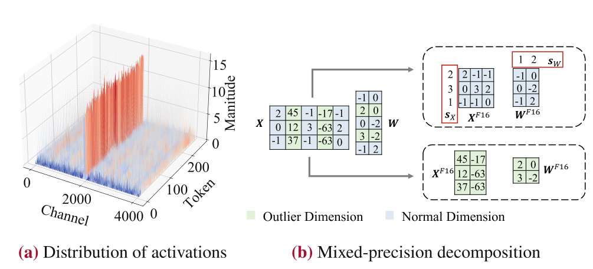
Common Quantization Strategies
The following part introduces some methods that can be applied to both weight and activation quantization.
- Fine-grained quantization. For Transformer models, weights and activation values are typically represented as tensors. As discussed in Sect. 9.3.1, coarse-grained quantization methods can be applied, where a single set of quantization parameters is used for each tensor. However, this approach often results in inaccurate numerical reconstruction, leading to the adoption of finer-grained methods to reduce quantization For instance, ZeroQuant [253] employs a token-level quantization method to errors. compress activation values by utilizing a unique set of quantization parameters for each token. Meanwhile, it applies a group-based quantization method to model weights, which are generally easier to quantize.
- Mixed precision decomposition. Existing research has found [254] that when the size of model parameters exceeds a certain threshold (e.g., 6.7B), some extremely large values appear in the activations of neural networks, referred to as outlier activation values. Interestingly, these outliers are primarily distributed in certain dimensions of activation values within transformer layers. To better understand this phenomenon, Fig. 9.7a shows the distribution of activation values for the LLaMA (7B) model. It can be observed that one channel (in orange) has absolute values significantly higher than those of other channels, highlighting the outlier dimensions mentioned earlier. Based on this finding, during matrix multiplication, the feature dimensions with outlier values (orange) can be computed separately from other normal dimensions (blue). As shown in Fig. 9.7b, 16-bit floating-point numbers (F16.) and 8-bit integers (I8.) are used for the calculations of these two parts respectively, allowing for higher precision recovery of these outlier values. Specifically, for the non-outlier part, the activation values and weights are first quantized to 8-bit integers to obtain X I8. and W I8., with the quantization process described as follows:
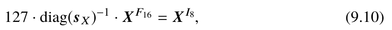

where sX . and sW . represent the maximum absolute values of each row or column in the input activation values and weights, respectively, and diag(·). indicates transforming a vector into a diagonal matrix (with original elements arranged along the diagonal). Based on the quantized values X I8. and W I8., an 8-bit integer multiplication operation can be performed to obtain an integer result stored as OI32., followed by dequantization to yield the 16-bit floating-point result OF16. Figure 9.7b illustrates this process, with the specific formulas as follows:


where “ .” denotes element-wise multiplication of matrices (Hadamard product), and OI32. and OF16. represent the results in integer and floating-point formats, respectively. For the outlier part, 16-bit floating-point multiplication is directly used, with the process described as follows:

Finally, the results from the normal part (Eq. 9.13) and the outlier part (Eq. 9.14) are added together to obtain the final result.
- Balancing the quantization difficulty. For LLM quantization, the issue of outliers in activation values is more pronounced than in weights, making activations generally harder to quantize. SmoothQuant [255] addresses this by transferring the quantization difficulty from activation values to model weights. This is accomplished by introducing a scaling transformation in the linear layer to balance the quantization challenges between
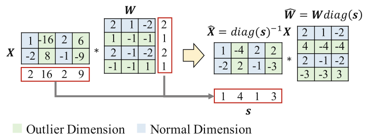
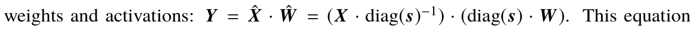
uses a mathematically equivalent transformation by introducing a scaling vector s. to control quantization difficulty. To set s., the formula also introduces a difficulty transfer coefficient α. to balance the quantization difficulty. It is calculated as follows: sj = max(x j)α/max(w j)(1-α). Figure 9.8 illustrates the specific transformation process of SmoothQuant. Taking α = 0.5. as an example, the calculation formula for s. becomes sj = max(x j)/max(w j). From the figure, it can be observed that the outlier dimensions in the transformed ˆX . are significantly mitigated, while the corresponding weight dimensions ˆW . are slightly affected, with overall impact remaining relatively small.
In practical applications, the aforementioned quantization strategies can be used jointly to improve the performance of quantized models. Additionally, quantization methods also rely on hardware or system-level support, such as efficient GPU kernels or hardware-friendly group partitioning methods, to ensure the algorithm’s runtime efficiency.
Other Quantization Methods
The above content primarily introduces post-training quantization methods. Next, we will briefly discuss two other quantization methods.
# bitsandbytes practice
from transformers import AutoModelForCausalLM
name = "yulan-team/YuLan-Chat-2-13b-fp16"
# 8-bit model quantization
model_8bit = AutoModelForCausalLM.from_pretrained(name, device_map="auto",
load_in_8bit=True)print(f"memory usage: {torch.cuda.memory_allocated()/1000/1000/1000} GB")
# 4-bit model quantization
model = AutoModelForCausalLM.from_pretrained(name, device_map="auto",
load_in_4bit=True)print(f"memory usage: {torch.cuda.memory_allocated()/1000/1000/1000} GB")# GPTQ practice
from transformers import AutoModelForCausalLM, AutoTokenizer, GPTQConfig
name = "yulan-team/YuLan-Chat-2-13b-fp16"
# 4-bit model quantization
tokenizer = AutoTokenizer.from_pretrained(name)
quantization_config = GPTQConfig(bits=4, dataset = "c4",
tokenizer=tokenizer)model = AutoModelForCausalLM.from_pretrained(name, device_map="auto",
quantization_config=quantization_config)print(f"memory usage: {torch.cuda.memory_allocated()/1000/1000/1000} GB")- Lightweight fine-tuning enhanced quantization. For LLMs, directly performing low-bit quantization (such as INT2 quantization) often results in significant performance degradation. To address this challenge, QLoRA [207] integrates LoRA fine-tuning (see Sect. 7.3.1) in the quantized model and further employs 16-bit precision for the introduced fine-tuning module, which compensates for the performance loss caused by quantization. This approach combines the lightweight benefits of LoRA with the model compression advantages of quantization. Experimental results show that QLoRA can effectively maintain the fine-tuning performance of the original 16-bit model using a 4-bit quantized model.
- Quantization-aware training. Since quantization-aware training involves learning all parameters, it incurs significant computational overhead and is therefore less commonly used in practice. Existing research has explored the application of quantization-aware training on LLMs [256], demonstrating that 4-bit quantization of weights and key-value caches can produce good results. However, the effectiveness of 4-bit activation quantization still requires improvement. Quantization Practice This part introduces the quantization practice of LLMs using the YuLan model as an example, based on open-source quantization libraries, specifically focusing on bitsandbytes and GPTQ-for-LLaMA.
- bitsandbytes. The bitsandbytes library is developed based on methods introduced in the LLM.int8() [254] and 8-bit optimizer [257] papers. This library primarily focuses on INT8 quantization for LLMs, providing support for 8-bit matrix multiplication and 8-bit optimizers. Currently, bitsandbytes also supports 4-bit weight quantization, mixed-precision decomposition methods, and QLoRA lightweight fine-tuning. It is integrated with HuggingFace, enabling users to quantize models directly when loading them by using the parameters load_in_8bit and load_in_4bit for 8-bit and 4-bit quantization, respectively. → →
- GPTQ-for-LLaMA. This quantization library is specifically designed for LLaMA models and is developed based on the GPTQ algorithm [252]. It supports 4-bit weight quantization for various parameter sizes of LLaMA models, including 7B, 13B, and 33B. Additionally, the library’s website provides comparisons between GPTQ-for-LLaMA and bitsandbytes in terms of memory usage and performance, allowing users to evaluate and select the most suitable option. With this library, decoding experiments for models like LLaMA (7B) can be conducted on a single RTX 3090 (24G) GPU, significantly reducing the model’s memory resource requirements. → →
9.3.3Empirical Analysis and Related Discussions#
Currently, model quantization is a crucial technique for enhancing the deployment efficiency of LLMs, significantly reducing memory usage and decoding latency. This subsection first summarizes the empirical findings from the academic community regarding quantization of LLMs and then explores the impact of commonly used quantization methods on model performance through experiments at different precision levels.
Existing Research Findings
Quantization research for LLMs has attracted significant attention from the academic community. We summarize widely recognized research findings to help readers quickly understand the impact of quantization methods on model performance and the conditions under which different quantization methods are most suitable.
- INT8 weight quantization generally has a minor impact on the performance of LLMs, while the effectiveness of lower-precision weight quantization depends on the specific methods utilized [251, 252, 255, 258]. In most cases, INT8 weight quantization effectively reduces memory usage without significantly affecting model performance. For INT4 (or INT3) weight quantization, existing methods often employ various strategies to mitigate performance degradation. Unlike small language models, lower-bit weight quantization generally has a lesser impact on LLMs [258]. Therefore, in practical applications, it is recommended to prioritize a larger parameter size with the same memory budget rather than a higher representation precision. For models within the same series (e.g., the LLaMA series), a 60B language model quantized to 4-bit precision often outperforms a 30B model quantized to 8-bit precision [259]. Specifically, related studies [260] have demonstrated that after 4-bit weight quantization, LLMs can still retain their capabilities for in-context learning, complex reasoning, and instruction following to some extent, with relatively minor impact.
- Activation values are more difficult to quantize than model weights in LLMs [254, 255, 258]. As described in Sect. 9.3.2, when the number of parameters in a Transformer language model reaches a certain scale, large outliers begin to appear in the activation values [254]. These outliers pose significant challenges for activation quantization in LLMs. To address this issue, specific handling methods are needed, such as mixed-precision decomposition [254], fine-grained quantization [254, 261], and difficulty balancing techniques [255], which can help mitigate the impact of outliers. More details on these methods can be found in Sect. 9.3.2. For smaller language models, activation values are generally more normalized, so activation quantization has a relatively small impact [258, 260]. Currently, low-bit activation quantization remains a challenging problem for LLMs, and even quantization-aware training methods [256] still require further exploration.
- Parameter-efficient fine-tuning methods can be used to compensate for the performance loss of quantized LLMs [205, 207]. When LLMs undergo extremely low-bit weight quantization (e.g., 2-bit quantization), significant drops in prediction accuracy can occur. This loss of precision can be mitigated through lightweight fine-tuning techniques, such as LoRA [205]. As discussed in Sect. 7.3.1, LoRA essentially involves maintaining two sets of parameters: the frozen model weights and fine-tuned low-rank matrix parameters. This method allows for low-bit quantization of model weights while representing and fine-tuning LoRA matrix parameters in 16-bit precision. During inference, the quantized model weights are first dequantized to 16-bit floating point numbers and then combined with LoRA weights for use. Research has shown [260] that the performance compensation approach based on LoRA fine-tuning effectively restores the performance of extremely low-bit quantized models. After fine-tuning, a 65B parameter model quantized to 2 bits can achieve performance close to that of a 13B model with 16-bit precision. Additionally, lightweight fine-tuning can strike a balance between model performance and training costs, effectively compensating for accuracy loss in quantized LLMs. QLoRA [207] has designed targeted performance compensation methods for quantized models, achieving results comparable to 16-bit model LoRA fine-tuning after fine-tuning a 4-bit quantized model. Experimental Analysis To better understand the impact of quantization methods on the performance of language models, this part analyzes the performance of instruction-tuned models after weight quantization through a series of experiments. Here, the bitsandbytes library is used, with the parameters load_in_8bit and load_in_4bit specified for model quantization. The models evaluated include LLaMA (7B) and LLaMA (13B), with different fine-tuned datasets consisting of FLAN-v2 [32], Alpaca-52K [33], and ShareGPT [94]. The precision levels assessed are 4-bit, 8-bit, and unquantized (16-bit) precision. Table 9.3 presents the performance of LLaMA models at three different quantization precision levels. The results demonstrate that both 8-bit and 4-bit weight quantization yield performance comparable to that of the original 16-bit precision models. Additionally, quantization compression significantly reduces the memory usage of language models. In practical applications, if memory resources are limited, it is recommended to prioritize using LLMs with 4-bit weight quantization.
9.4Other Model Compression Methods#
In addition to model quantization, we introduce two other common model compression methods below: model distillation and model pruning. Unlike model quantization, model distillation and model pruning reduce the number of parameters by simplifying the model structure.

Precision
AlpacaFarm MMLU
BBH
Memory (GB) Model
Dataset
47.34
12.58
FP16
6.65
35.05
FLAN-v2
47.02
6.65
INT8
6.15
35.17
46.23
3.94
INT4
7.83
34.77
40.87
12.58
FP16
32.55
33.66
LLaMA (7B)
Alpaca-52K
39.98
6.65
INT8
33.60
34.38
39.24
3.94
INT4
29.57
32.80
41.30
12.58
FP16
72.05
32.90
ShareGPT
39.34
6.65
INT8
72.86
32.71
40.08
3.94
INT4
70.31
32.11
51.67
24.40
FP16
8.14
41.46
FLAN-v2
51.02
12.53
INT8
7.64
41.25
50.48
7.34
INT4
7.52
40.68
47.63
24.40
FP16
33.60
36.10
LLaMA (13B)
Alpaca-52K
47.04
12.53
INT8
31.43
35.98
46.20
7.34
INT4
30.87
36.16
47.58
24.40
FP16
75.59
38.00
ShareGPT
47.71
12.53
INT8
73.79
38.31
45.77
7.34
INT4
71.99
36.97
9.4.1Model Distillation#
The goal of model distillation is to transfer the knowledge contained in a complex model (the teacher model) to a simple model (the student model), thereby achieving compression of the complex model. Typically, both the final output of the teacher model and its intermediate states can be used to train the student model, so that the student model’s output closely approximates that of the teacher model.
In practical applications, the distillation loss function is often combined with the task loss function (such as classification loss) to train the student model. We will first introduce traditional knowledge distillation methods and then discuss their application in LLMs.
Traditional Knowledge Distillation Methods
Traditional model distillation methods can be categorized into two types based on the distilled knowledge: feedback-based knowledge distillation methods (Fig. 9.9a) and feature-based knowledge distillation methods (Fig. 9.9b).
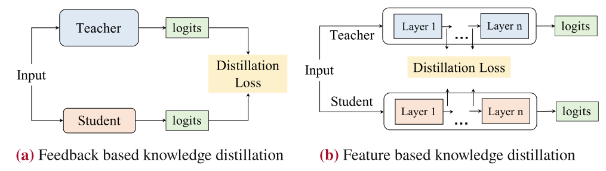
- Feedback-based knowledge distillation. This method primarily focuses on the logits of the final layer output from the teacher model. After being transformed by softmax, these logits can serve as “soft labels” for the student model to learn from, as shown in Fig. 9.9a. The distillation loss function can be formally expressed as

where LR. often employs KL divergence as the metric, lt . and ls. represent the output logits of the teacher model and student model, respectively, and Pt(·). and Ps(·). represent the predicted probability distributions after applying the softmax function of the teacher and student models. From Eq. 9.15, the core optimization objective is to align the logits output by the student model as closely as possible with those of the teacher model, thereby enabling the student model to learn the knowledge from the teacher model.
- Feature-based knowledge distillation. Compared to distillation based on predicted distributions, feature-based distillation (as shown in Fig. 9.9b) focuses on the activation values of the outputs from the intermediate layers of the teacher model, using them as supervised information to train the student model. For example, in a multi-layer Transformer architecture, the activation values from each layer can be viewed as a form of knowledge feature representation, with the corresponding distillation loss function:

where ft(x).and fs(x).represent the features derived from the intermediate layer activations of the teacher model and student model, respectively, Φ(·). denotes a transformation function to handle output shape mismatches, and LF (·). is a similarity function used to measure the similarity between the intermediate layer features of the teacher model and those of the student model.
Compared to the final predicted distributions, intermediate layer features provide richer knowledge information, which helps achieve more effective knowledge transfer during the model distillation process. However, this method also faces some practical challenges, such as architectural inconsistency and target layer selection issues.
Knowledge Distillation Methods for LLMs
Knowledge distillation for LLMs aims to improve a smaller model by utilizing the guidance of a larger model. Depending on whether the weights of the large model are accessible, both white-box and black-box model distillation methods can be used. In white-box model distillation, access to model weights allows them to directly guide the student model. In contrast, black-box model distillation relies solely on the output information to train the small model since the weights are not accessible. Currently, most research primarily focuses on distilling key capabilities of LLMs, such as in-context learning, chain-of-thought, and instruction following. Next, we will introduce the distillation of the chain-of-thought reasoning ability as an example (for a detailed introduction to chain-of-thought reasoning, please refer to Sect. 10.3).
Question: A gentleman is carrying equipment for golf, what is he likely to have?
Options: (A) club; (B) assembly hall; (C) meditation center; (D) meeting; (E) church
Chain-of-thought: The answer must be something that is used for golf. Of the above
choices, only clubs are used for golf. So the answer is (A) club.
Example 9.2 An input example for knowledge distillation of chain-of-thought
ability
To effectively distill the chain-of-thought reasoning ability, researchers leverage the large model to generate the reasoning process and combine it with the final answer to guide the learning of the small model [262]. This method provides important supervision information about the reasoning process from the large model. As illustrated in Example 9.2, the input of the multiple-choice question task consists of the “Question” and “Options,” followed by the chain-of-thought explanation and the correct answer generated by the large model. Based on this input, the student model can be prompted to predict
labels while also generating the chain-of-thought text. This approach can be formalized in the following loss function:

where Llabel. represents the prediction loss for the labels, Lcot. denotes the loss for generating the chain-of-thought text, and λ. is the combination coefficient.
9.4.2Model Pruning#
Model pruning aims to effectively reduce the number of parameters in a model without significantly sacrificing performance, thereby lowering the model’s memory and computational costs. This subsection first briefly introduces traditional model pruning methods and then discusses those specifically designed for LLMs.
Traditional Model Pruning Methods
Traditional model pruning methods can generally be divided into two categories: structured pruning and unstructured pruning.
The following part provides a detailed introduction to each.
torch.nn.utils.prune.ln_structured
# module.weight is the weight to be pruned, amount is the proportion to be
pruned,# n=2 indicates the use of L2 norm, dim=0 indicates that the 0th dimension
is being prunedprune.ln_structured(module, name="weight", amount=0.5, n=2, dim=0)torch.nn.utils.prune.l1_unstructured
# module.weight is the weight to be pruned, amount is the proportion to be
pruned,prune.l1_unstructured(module, name="weight", amount=0.3)- Structured pruning. Structured pruning seeks to remove model components that have a minimal impact on performance, which can include neurons, channels, or even entire intermediate layers. Since LLMs typically consist of multiple stacked Transformer layers, we will discuss dimension pruning within the feed-forward layer as an example. In practice, the L2. norm of each dimension of the weight matrix can be computed as a criterion for assessing its importance, allowing for the removal of dimensions with lower importance, thereby achieving model pruning. This can be implemented using the → →
- Unstructured pruning. As another pruning method, unstructured pruning primarily focuses on eliminating unimportant values from a model’s weight matrices. Unlike structured pruning, unstructured pruning does not alter the structure of the model. Typically, model weights are represented and stored in matrix form; unstructured pruning creates a mask matrix consisting of zeros and ones, which is multiplied by the original weights. This means that weights at positions where the masks with the zero value do not contribute to the model’s calculations. After pruning, the positions that have been pruned will only store the value 0, thereby saving storage space. The following code demonstrates weight pruning using the L1. norm (taking 30% as an example), which can be implemented → In general, unstructured pruning can achieve a higher pruning ratio in practical applications. However, it does not significantly improve the computational efficiency of the model, as the masked portions may still be involved in calculations. To accelerate the computations, specific software and hardware are required to provide support for efficiency improvement [263]. In contrast, structured pruning can significantly reduce the number of matrix multiplications by removing structural units, thereby achieving both model compression and acceleration. Pruning Methods for LLMs Similar to traditional model pruning, LLMs can also be pruned, using either unstructured pruning or structured pruning. As an early work, SparseGPT [264] achieved an unstructured pruning of 60% of model parameters while maintaining a relatively stable perplexity. Additionally, research on structured pruning for LLMs has also yielded impressive model compression results. For instance, LLM-prune [265] pruned 20% of parameters on LLaMA (7B) and retained 93.6% of the original model’s prediction accuracy through additional training. Similarly, Sheared LLaMA [266] reduced LLaMA-2 (7B) to a scale of 2.7B parameters while maintaining 87.8% of the original model’s prediction accuracy on evaluation tasks. The following part will take Sheared LLaMA as an example to describe the pruning algorithms for LLMs. Sheared LLaMA [266] introduces targeted structured pruning, which formulates structured pruning as a constrained optimization problem. It aims to learn mask variables for different structures to eliminate redundant parameters, such as attention heads and feature dimensions, ensuring that the resulting subnetwork effectively retains the original model’s capacity. For example, in the attention heads, we can introduce the mask variable denoted by zhead ∈ RNS., where NS. represents the total number of attention heads in the original model. In zhead., each element has a value of either 0 or 1, with a value of 0 for the i-th element indicating that the corresponding attention head will be removed. To search for structures that need to be pruned, the Lagrange multiplier method can be used to express the pruning objective as a constraint in the loss function. This approach allows for a trade-off between the pruning ratio and model performance, enabling the pruning of specific structures. Formally, the constraint for a single-layer Transformer attention head can be represented as

where NT . represents the number of attention heads in the target structure. Similarly, the constraint for the intermediate dimension can be expressed as ˜Lint., the constraint for the hidden layer dimension as ˜Lhidden., and the constraint for the number of layers as ˜Llayer. Based on these constraints, the formal objective function for model pruning can be expressed as follows:


where L(θ, z). represents the loss of the language model when pruning using the mask variable z., and LS. represents the total number of layers. From the above expression, it can be seen that model pruning is transformed into an optimization problem on the given training dataset, with the objective of learning mask variables that satisfy the optimization criteria to remove or retain specific structures.
To better optimize the aforementioned objectives, Sheared LLaMA introduces a dynamic data mix learning method, referred to as dynamic batch loading in the original paper (see Sect. 4.4). Unlike fixed data mix methods, the dynamic batch loading method adaptively adjusts the ratios of different domain datasets during training. It increases the
proportion of datasets where the model performs poorly while decreasing the proportion where it performs well, thereby improving data learning efficiency throughout the training process.
Notes
- 1 1In this section, we will use the terms “token” and “word” interchangeably, as the algorithms presented can
- 29 29
- 8 8